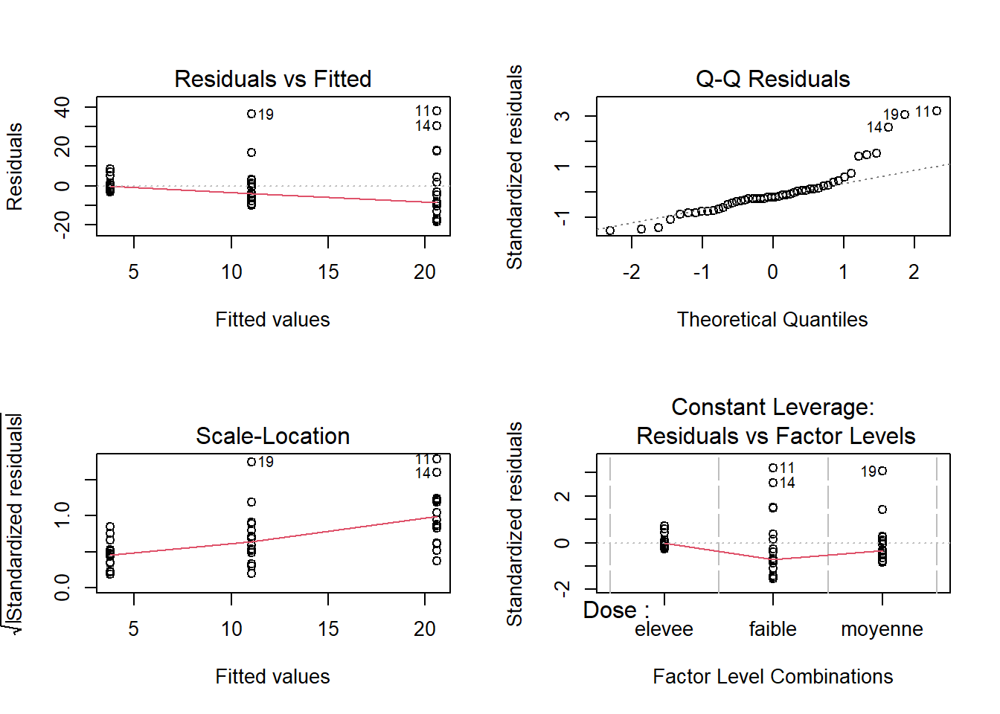
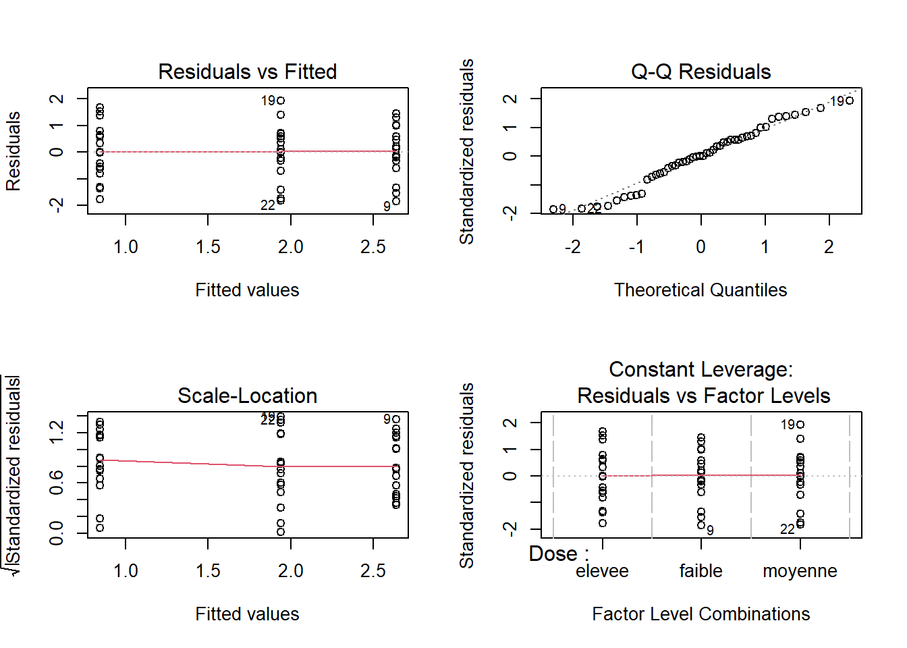
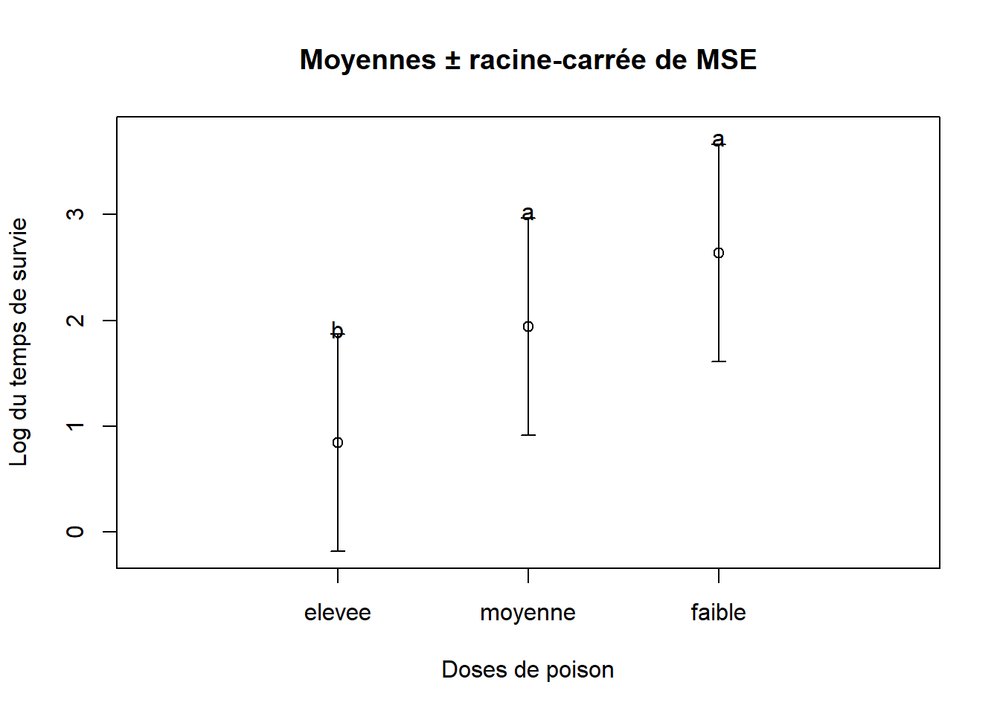

6.3 Exercices
6.3.1 Question 1
a. Donnez un avantage d’effectuer une ANOVA au lieu de plusieurs tests \(t\) pour comparer les moyennes des groupes entre elles?
Réponse
L’avantage principal est de réduire l’erreur de type I, puisqu’on teste tous les groupes simultanément.b. Distinguez entre “erreur au niveau de la comparaison” et “erreur au niveau de l’expérience”.
Réponse
L’erreur au niveau de la comparaison se produit lorsqu’on rejette faussement \(H_0\) alors qu’elle est vraie pendant une comparaison entre deux groupes. L’erreur au niveau de l’expérience se produit lorsqu’au moins une comparaison a rejeté faussement \(H_0\) alors qu’elle était vraie. Le test de Tukey maintient l’erreur liée à l’expérience au seuil \(\alpha\) que nous avons fixé.6.3.2 Question 2
a. Importez le fichier Survie.txt qui présente le temps de survie en heures d’animaux exposés à trois doses de poison (faible, moyenne, elevee). On désire savoir s’il existe des différences entre les moyennes des groupes définis par les doses de poison.
Réponse
##on importe le jeu de données
poison <- read.table("Module_6/data/Survie.txt", header = TRUE)
head(poison)## Temps Dose
## 1 15.998507 faible
## 2 12.539667 faible
## 3 3.017424 faible
## 4 7.621695 faible
## 5 22.274759 faible
## 6 24.971949 faibleb. Spécifiez l’hypothèse nulle que vous pourriez tester avec ces données.
Réponse
Les hypothèses statistiques testées sont :\(H_0: \mu_\mathtt{faible} = \mu_\mathtt{moyenne} = \mu_\mathtt{elevee}\)
\(H_a\): au moins une moyenne diffère des autres
\(\alpha = 0.05\)
c. À l’aide d’une ANOVA, déterminez si le temps de survie dépend de la dose de poison. Vérifiez toutes les suppositions de l’ANOVA et effectuez des transformations si nécessaire.
Réponse
Avant de faire l’ANOVA, observons la structure interne des données :
## 'data.frame': 48 obs. of 2 variables:
## $ Temps: num 16 12.54 3.02 7.62 22.27 ...
## $ Dose : chr "faible" "faible" "faible" "faible" ...On observe que la variable Dose est une variable caractère (chr). Or elle doit être un facteur (factor) pour être utilisée dans l’analyse. Nous devons donc la transformer :
Remarquer que le changement a bel et bien été réalisé dans la structure des données :
## 'data.frame': 48 obs. of 2 variables:
## $ Temps: num 16 12.54 3.02 7.62 22.27 ...
## $ Dose : Factor w/ 3 levels "elevee","faible",..: 2 2 2 2 2 2 2 2 2 2 ...Nous pouvons maintenant réaliser l’ANOVA.
m1 <- aov(Temps ~ Dose, data = poison)
## Vérifions que les suppositions sont respectées.
par(mfrow = c(2, 2))
plot(m1)
On constate que les variances ne sont pas homogènes, puisque le graphique des résidus en fonction des valeurs prédites montre qu’un groupe varie moins que les autres.
##on essaie une transformation log
poison$log.Temps <- log(poison$Temps)
m2 <- aov(log.Temps ~ Dose, data = poison)
## Vérifions que les suppositions sont respectées suite à cette transformation:
par(mfrow = c(2, 2))
plot(m2)
Les variances sont maintenant homogènes après cette transformation. Les résidus respectent aussi la condition de normalité. De plus, nous assumons que le dispositif expérimental assure la supposition d’indépendance des erreurs. Nous pouvons donc procéder avec l’interprétation de l’ANOVA.
d. Que pouvez-vous conclure de l’analyse? Incluez le tableau d’ANOVA dans votre présentation des résultats.
Réponse
## Df Sum Sq Mean Sq F value Pr(>F)
## Dose 2 26.27 13.136 12.49 4.85e-05 ***
## Residuals 45 47.33 1.052
## ---
## Signif. codes: 0 '***' 0.001 '**' 0.01 '*' 0.05 '.' 0.1 ' ' 1e. Si vous avez rejeté l’hypothèse nulle de l’ANOVA, effectuez des comparaisons multiples. Présentez les résultats des comparaisons multiples à l’aide d’un graphique.
Réponse
## Tukey multiple comparisons of means
## 95% family-wise confidence level
##
## Fit: aov(formula = log.Temps ~ Dose, data = poison)
##
## $Dose
## diff lwr upr p adj
## faible-elevee 1.7976010 0.9188352 2.6763667 0.0000311
## moyenne-elevee 1.0975613 0.2187956 1.9763271 0.0111516
## moyenne-faible -0.7000397 -1.5788054 0.1787261 0.1418379Le test de Tukey indique que les groupes de dose moyenne et faible ne diffèrent pas l’un de l’autre, mais que le groupe à dose elevee diffère des deux autres groupes. On peut représenter le tout dans un graphique en suivant les étapes suivantes :
##moyennes des groupes
moy.orig <- tapply(X = poison$log.Temps, INDEX = poison$Dose, FUN = mean)
##on met les moyenne en ordre croissant
moy <- sort(moy.orig)
##extraire MSE
MSE <- 1.0527
##aussi possible d'extraire à partir du summary
#MSE <- summary(m2)[[1]][2, "Mean Sq"]
##calculer racine carrée de MSE
sqrt.MSE <- sqrt(MSE)
##calculer les limites des barres d'erreur
lim.sup <- moy + sqrt.MSE
lim.inf <- moy - sqrt.MSE
##créer graphique vide sans axe des x's
plot(x = 0, y = 0, type = "n",
ylim = c(min(lim.inf), max(lim.sup)+0.1),
xlim = c(0, 4), xlab = "Doses de poison",
ylab = "Log du temps de survie",
main = "Moyennes ± racine-carrée de MSE",
xaxt = "n")
##ajouter axe des x's
axis(side = 1, at = c(1, 2, 3),
labels = names(moy))
##ajouter moyennes
points(x = c(1, 2, 3),
y = moy)
##ajouter barres d'erreurs
arrows(x0 = c(1, 2, 3),
y0 = lim.inf,
x1 = c(1, 2, 3),
y1 = lim.sup, length = 0.05,
angle = 90, code = 3)
##ajouter les lettres, lim.sup + 0.05
text(x = 1, y = lim.sup[1] + 0.05, labels = "b")
text(x = 2, y = lim.sup[2] + 0.05, labels = "a")
text(x = 3, y = lim.sup[3] + 0.05, labels = "a")
Il est aussi approprié de présenter les résultats sur l’échelle originale de la variable. Ici, puisque nous avons utilisé la transformation logarithmique à base \(e\) pour effectuer l’ANOVA, on peut faire la transformation inverse pour ramener les données à l’échelle originale (l’inverse de log( ) est exp( )).
##on transforme les moyennes
orig.moy <- exp(moy)
##on transforme les bornes des barres d'erreurs
orig.lim.inf <- exp(lim.inf)
orig.lim.sup <- exp(lim.sup)
##créer graphique vide sans axe des x's
plot(x = 0, y = 0, type = "n",
ylim = c(min(orig.lim.inf), max(orig.lim.sup)+0.1),
xlim = c(0, 4), xlab = "Doses de poison",
ylab = "Temps de survie (h)",
main = "Moyennes ± racine-carrée de MSE",
xaxt = "n")
##ajouter axe des x's
axis(side = 1, at = c(1, 2, 3),
labels = names(orig.moy))
##ajouter moyennes
points(x = c(1, 2, 3),
y = orig.moy)
##ajouter barres d'erreurs
arrows(x0 = c(1, 2, 3),
y0 = orig.lim.inf,
x1 = c(1, 2, 3),
y1 = orig.lim.sup, length = 0.05,
angle = 90, code = 3)
##ajouter les lettres, lim.sup + 0.40
text(x = 1, y = orig.lim.sup[1] + 0.40, labels = "b")
text(x = 2, y = orig.lim.sup[2] + 0.40, labels = "a")
text(x = 3, y = orig.lim.sup[3] + 0.40, labels = "a")